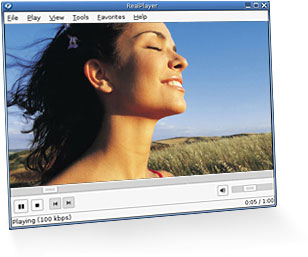

 Download RealPlayer Installation Instructions
Advanced Installation
Download RPM Package
RealPlayer 10 for Linux is based on the open source Helix player. Interested in helping build the next version of the player? Go to the Helix Community.